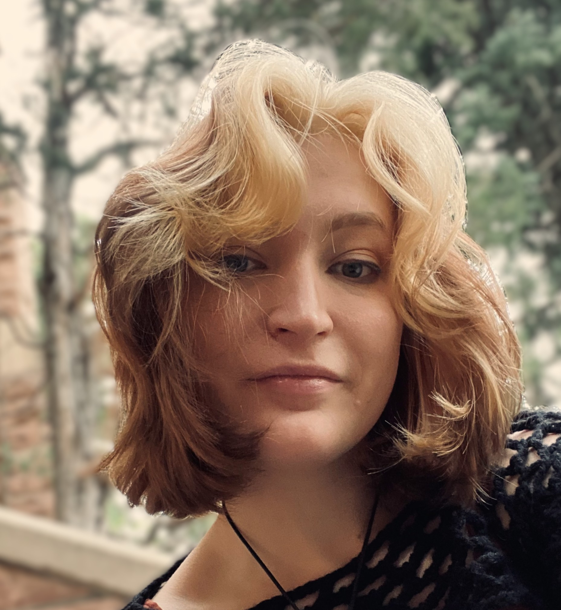

About Me
 My name is Grace Harrell, and I'm a senior computer science student at the University of Colorado Boulder. I'm especially interested in cybersecurity and software engineering. Some of my hobbies include fencing and reading. I've fenced as a saberist with CU for the past couple of years, and I founded a book club, called ELLA, for engineering students. The purpose of the club is to connect sci-fi novels to technologies and their impacts in the real world.
I grew up in Steamboat Springs, a beautiful little mountain town in northwest Colorado. Growing up there made me value tight knit communities and the outdoors. I go back fairly often to visit my parents, my three baby siblings, and my pet bird.